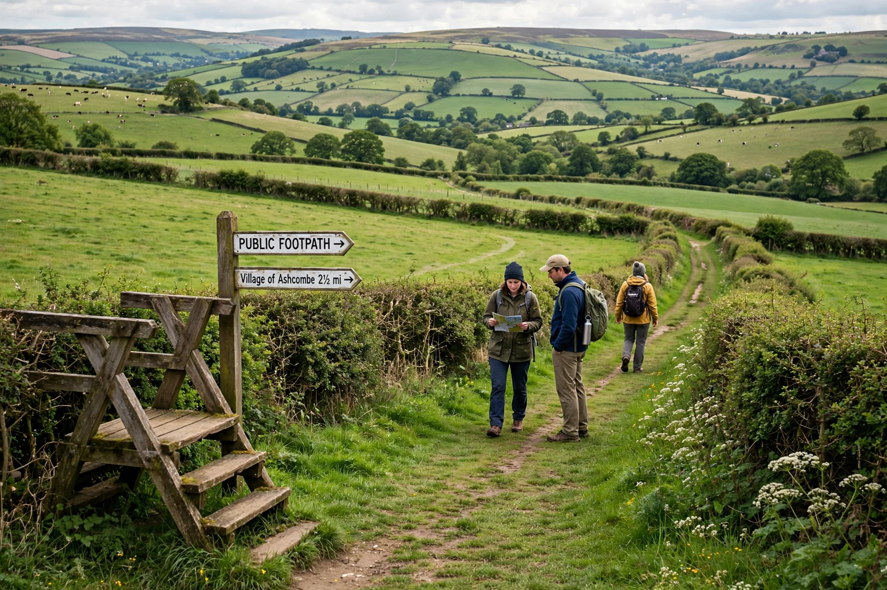

In England and Wales, a right of way is a path on which the public have a legally protected right to pass and re-pass. The network comprises public footpaths, bridleways, restricted byways and byways open to all traffic, recorded by surveying authorities on the definitive map and statement.

Rights of way law rests on the principle "once a highway, always a highway." The National Parks and Access to the Countryside Act 1949 required definitive maps; the Countryside and Rights of Way Act 2000 introduced a right of access to mapped open country ("right to roam") and originally set a 2026 cut-off for recording historic paths, later repealed in England. Highway authorities must maintain the surface, while landowners must keep paths clear of obstruction and overhanging vegetation.
The modern network owes much to campaigning by the Ramblers (founded 1935) and events such as the 1932 Kinder Scout mass trespass in the Peak District. Scotland has a separate system under the Land Reform (Scotland) Act 2003.